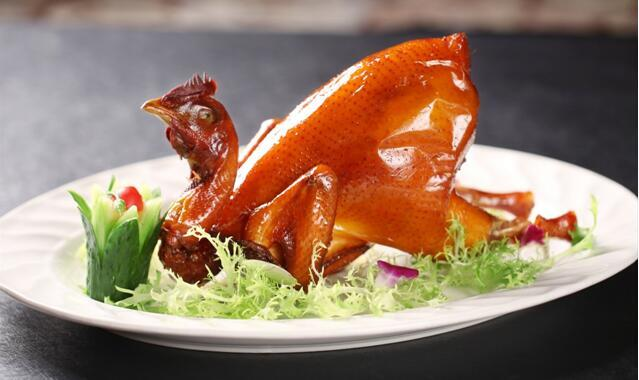

Soy sauce chicken
- Recipe NameSoy sauce chicken
- Description
It's a home-made dish with rice chicken as the main ingredient, soy sauce and cooking wine as well as sugar as the seasoning.
- LevelLow
- Time Needed20min
- Main IngredientChicken
- Auxiliary IngredientWater, peanut oil, sesame oil, soy sauce, Shajiang, ginger, onion, coriander, chicken powder
- Process
1. Cut some ginger, ginger, onion and three mushrooms into a mash. Add a small amount of salt. Mix with coriander and fill in chicken belly.
2. Apply a layer of salt plate chicken powder to the chicken surface, and put it for 5 minutes to taste.
3. Add half a bottle of soy sauce, a bowl and a half of water and a small amount of sesame oil to the pot.
4. Put the whole chicken in a skillet and cook for about 25 minutes. Turn off the heat.